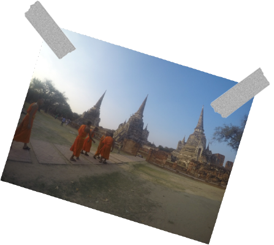

Tired of the monotony of NEW YORK CITY corporate life, Royce Bable, an ambitious 20-something, trades in his promising media [research] career for a one-way ticket to Southeast Asia.
In his live ONE-MAN SHOW, Royce brings you on an 8-country adventure toward self-discovery. During the Not Here Right Now, showgoers are treated to stories and experiences of Royce’s inspiring journey from corporate citizen to world traveler.
This is for Jo Mercado, one of brightest souls to grace this planet.
Love you to the moon and back,
Royce
Atlanta native, Royce Bable, has always been actively involved in arts, media and culture. He’s a proud graduate of the Tri-Cities High School Visual and Performing Arts Magnet Program, the Alma Mater of Atlanta legends, OutKast, Kandi Burruss, and Kenan Thompson. Royce attended Howard University and spent his summers in San Francisco interning at Google before hopping around to LA, Chicago, and New York working with Nielsen (yes...the TV ratings company).
It was time for a serious change, so Royce dropped everything and backpacked across Southeast Asia for 4 ½ months and made tons of memories along the way.
Royce currently resides in Atlanta, GA, is the Director of Partnerships for A3C Festival & Conference, and Executive Producer of Not Here Right Now, a live one-man show about his Southeast Asian journey.
